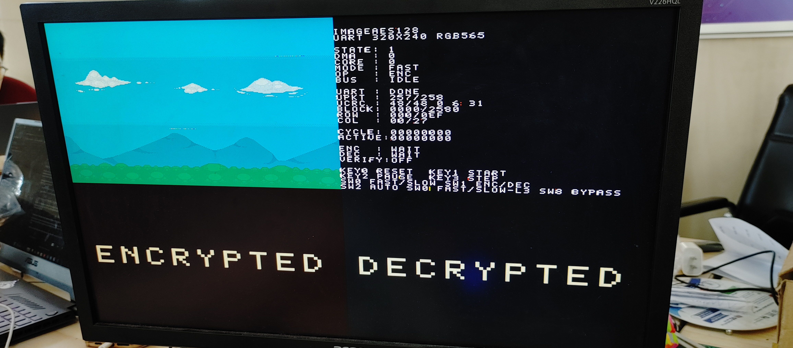
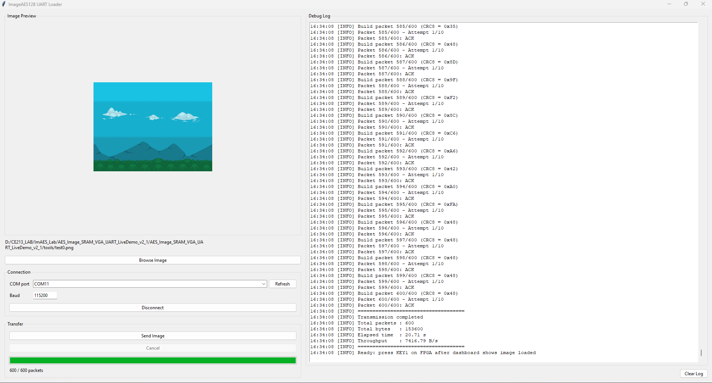

UART Image Load
PC sends 600 validated packets into external SRAM before AES starts.
FPGA · AES-128 · SRAM · VGA · UART
Verilog AES-128 image encryption/decryption demo for 320x240 RGB565 images, streamed from PC to FPGA and visualized live on VGA.
Live image crypto pipeline
PC sends 600 validated packets into external SRAM before AES starts.
DMA packs 8 RGB565 pixels into each 128-bit AES block and writes the result back.
Original, encrypted, decrypted and status views appear together at 640x480.
Circuit flow
18'h00000
18'h14000
18'h28000
Captured output




Run path
quartus/AES_128_v2_1_uart.qpf.top_uart.python -m pip install pillow pyserial tkinterdnd2
python tools/send_image_packet_2.py --guipython tools/send_image_packet_2.py --path tools/test0.png --port COM3| KEY0 | Reset |
|---|---|
| KEY1 | Start AES |
| SW0 | FAST / SLOW-L3 |
| SW1 | Encrypt / Decrypt |
| SW2 | Auto encrypt then decrypt |
| SW8 | Bypass UART wait |
Documentation